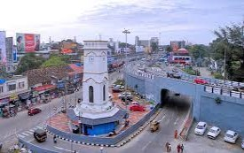
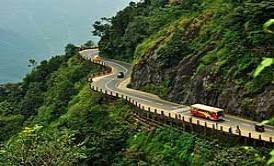
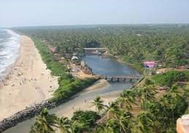
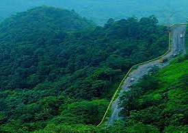
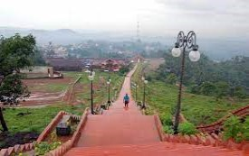
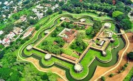
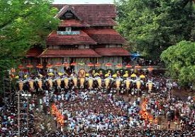
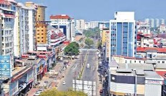
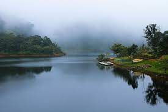

Kerala is divided in to fourteen districts for administrative purposes which you can browse from following districts list (zilla) along with area.
Click on the name of each district to explore...
| # | District | Area(km²) |
|---|---|---|
| 1 | Kottayam | 2206 |
| 2 | Trivandrum | 2189 |
| 3 |  Kollam | 2483 |
| 4 |  Kozhikode | 2345 |
| 5 | 1989 | |
| 6 |  Kannur | 2961 |
| 7 |  Wayanad | 2130 |
| 8 |  Malappuram | 3554 |
| 9 |  Palakkad | 4484 |
| 10 |  Trissur | 3027 |
| 11 |  Ernakulam | 3063 |
| 12 | Idukki | 4356 |
| 13 |  Pathanamthitta | 2652 |
| 14 | Alappuzha | 1415 |